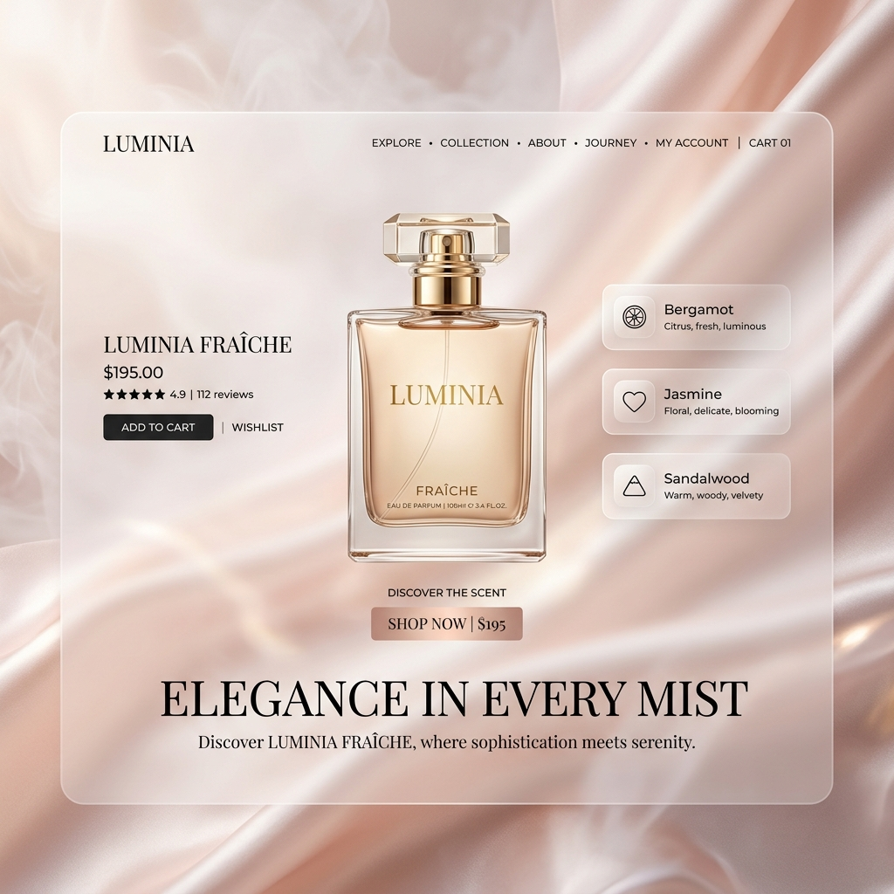

CIRCULAR ECONOMY / 3D PRINTING
「捨てる」という概念を、
「捨てる」という概念を、
家具から無くす。
3D-FURNITUREは、廃棄されたプラスチックや植物由来のバイオ素材を用い、巨大な3Dプリンターで家具を「オンデマンド製造」するサーキュラー（循環型）プラットフォームです。

THE FAST FURNITURE PROBLEM
大量生産され、大量に捨てられる家具
安価で買える家具の多くは、引っ越しのたびに捨てられ、巨大な粗大ゴミとして地球を汚染しています。木を切り倒し、海外から船で運び、数年で捨てるというサイクルは、もはや持続不可能です。
CIRCULAR PRINTING
材料の「循環」を前提とした製造プロセス
100%リサイクル可能な独自素材
木材の廃材や、海洋プラスチックゴミを独自技術でペレット化。3Dプリンターのインクとして使用でき、何度でも溶かして再利用できる魔法の素材です。
在庫を持たない「オンデマンド生産」
ユーザーから注文が入った瞬間に、工場にある巨大なロボットアーム式3Dプリンターが稼働。倉庫に在庫を抱える無駄が一切ありません。
下取り＆再プリント・プログラム
ライフステージの変化で不要になった家具は当社が回収。それを細かく砕いて溶かし、新しいデザインの家具としてもう一度ユーザーへ届けます。
PARAMETRIC FIT
自分の体型に合わせたフルカスタム
スマホで自分の体型をスキャンすれば、背骨のカーブや足の長さに完璧にフィットした「世界に一つだけの椅子」の3Dデータが生成され、そのままプリントされます。
GENERATIVE DESIGN
複雑で有機的な「自然界のデザイン」
直角の木の板では絶対に作れない、木の根や骨の構造を模倣した美しい曲線美。3Dプリンターだからこそ実現できる、強くて軽い画期的なデザインです。
CLIENT SUCCESS
Case Study | グローバル企業のサステナブル・オフィス
環境配慮を掲げる企業のオフィス移転。すべてのデスクと椅子を、自社工場で出たプラスチック廃材を再利用してプリント。究極の「ゴミゼロ・オフィス」を実現し、企業のESG評価を大きく押し上げました。
OUR VISION
形を変えて、永遠に生き続ける
私たちは家具を「売る」のではありません。素材というリソースをユーザーと「共有」し、時代や好みに合わせて形を変えながら、永遠に循環させる仕組みを提供します。